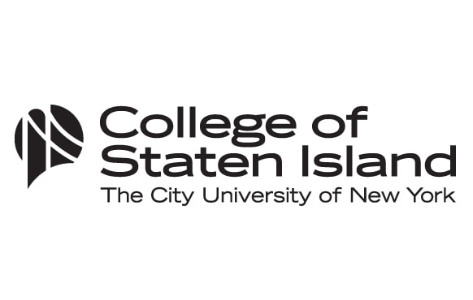

Welcome to the page for College of Staten Island. Through this page you
can connect wth your peers and alumni, as well as utilize the built in
features to rock your college career.
Resources
-
CUNY Internship Programs sympicity handshake CUNY Service Corps, CUNY
Tutor corps, CUNY Recovery Corps, CUNY Cultural Corps,
https://www.healthycuny.org/opportunites-internships, etc